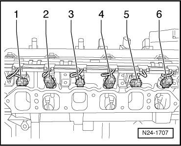
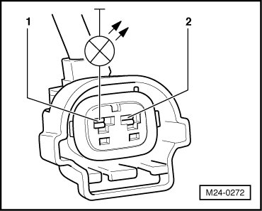
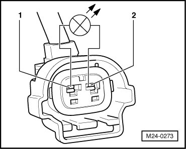
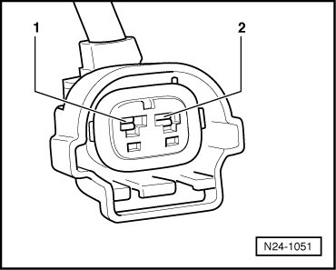
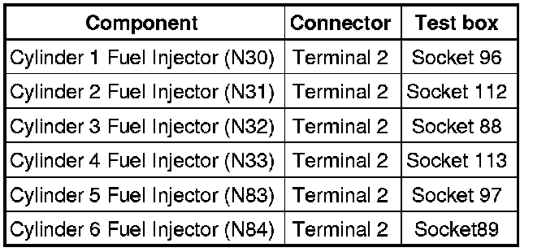
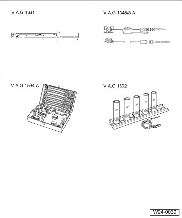
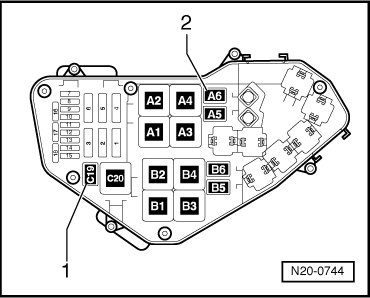
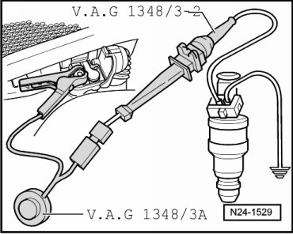

Generic Scan Tool
Diagnostic Procedures
Fuel Injectors, Checking
Special tools, testers and auxiliary items required
• Torque wrench (5 to 50 Nm) (VAG1331)

• Multimeter (VAG1526) or Multimeter (VAG1715)
• Voltage test lamp (VAG1527)
• Connector test kit (VAG1594)
• Wiring diagram
Test requirements
• The corresponding fuses of fuel injectors (N30) to (N33), (N83), (N84)) in E-box (in plenum chamber, left side) must be OK:

• Motronic Engine Control Module (ECM) Power Supply Relay (J271) must be OK, check:
• Battery voltage must be at least 11.5 volts.
• Ground (GND) connections between engine and chassis must be OK.
• All electrical consumers such as, lights and rear window defroster must be switched off.
• If vehicle is equipped with an A/C system, it must be switched off.
• Parking brake must be engaged or else daylight driving lights will be switched on.
• For vehicles with automatic transmission, selector lever must be in P.
• Engine speed (RPM) sensor must be OK, checking.
• Ignition switched off.
Test sequence
- Remove intake manifold change-over , Intake manifold change-over, disassembling and assembling.
- Disconnect harness connectors for Fuel Injectors 1 through 6 (N30 to (N33), (N83), (N84)).

Resistance values of fuel injectors, checking
- Test resistance of fuel injectors between terminals.
Specified value: 13.0 to 16.0 ohms
If specified value is not obtained:
- Replace faulty fuel injector (Cylinder 1 Fuel Injector (N30) to Cylinder 4 Fuel Injector (N33), Cylinder 5 Fuel Injector (N83) to Cylinder 6 Fuel Injector (N84)).
Note the following when installing the fuel injectors:
• Replace O-rings on all fuel injectors and wet them slightly with clean motor oil.
• Insert fuel injectors into fuel distributor perpendicular and in the right position, and secure them with retaining clips.
• Position fuel distributor with secured fuel injectors and apply uniform pressure to press it in.
• The connectors must audibly engage on valves when attached.
- Erase DTC memory of Engine Control Module (ECM), Diagnostic mode 4: Reset/erase diagnostic data.
- Generate readiness code.
Checking voltage supply
- Connect diode test lamp to fuel injector connector to be tested, terminal 1 + Ground (GND).

- Operate starter and test voltage supply for fuel injector.
LED must light up.
- Switch ignition off.
If LED does not light up:
- Check voltage supply at 2-pin connector terminal 1 to Motronic Engine Control Module (ECM) Power Supply Relay (J271) according to wiring diagram:
- Erase DTC memory of Engine Control Module (ECM) , Diagnostic mode 4: Reset/erase diagnostic data.
- Generate readiness code.
Activation and voltage supply, checking
- Connect diode test lamp to the connector terminals 1 + 2 of the fuel injector to be checked.

- Operate starter and test activation of fuel injector.
LED should flicker.
- Switch ignition off.
If LED does not flicker:
- Check wires according to wiring diagram.
Checking wiring
- Connect test box to control module wiring harness , connect test box for wiring test.
- Check wires between test box and 2-pin connector for open circuit according to wiring diagram.

Wire resistance: max. 1.5 ohms

- Check wires for short circuit to B+ or Ground (GND).
Specified value: infinite ohms
If there is no malfunction in wire connection:
- Replace Motronic Engine Control Module (ECM) (J220).
Injection quantity and proper seal of fuel injectors, checking

Special tools, testers and auxiliary items required
• Torque wrench (5 to 50 Nm) (VAG1331)
• Remote control (VAG1348/3A) with adapter cables (VAG1348/3-2) and (VAG1348/3-3)
• Connector test kit (VAG1594A)
• Tester for quantity of injected fuel (VAG1602)
Test requirements
• Fuel pressure must be OK, check , fuel pressure regulator and retaining pressure, checking.
• Ignition switched off.
Test sequence
Observe safety precautions.
Observe rules for cleanliness.
- Remove intake manifold change-over , Intake manifold change-over, disassembling and assembling.
• Seal the intake channels in intake manifold change-over and in cylinder head using a clean rag.
- Remove fuel rail completely along with the fuel injectors (fuel supply line remains connected) , fuel rail with fuel injectors, disassembling and assembling.
• Check for proper seal.
• Check injection quantity.
Checking Proper Seal
- Remove relays for electric Fuel Pump (FP) from relay carrier:

1. Fuel Pump (FP) 2 Relay (J49), (Fuel Pump -FP-, right), position C19
2. Fuel Pump (FP) Relay (J17), (Fuel Pump -FP-, left), position A6.
• Do not use metallic tools to pry off relays from relay carrier. The terminals could conduct electricity.
- Now connect adapter (VAG1348/3-3) of remote control to connector of Fuel Pump (FP) Relay for left and right Fuel Pumps (FP):
• Connector (arrow) of Fuel Pump (FP) Relay for right Fuel Pump (FP).

• Connector (arrow) of Fuel Pump (FP) Relay for left Fuel Pump (FP).

- Connect remote control alligator clip to plus pole in engine compartment.
- Operate remote control:
Fuel Pumps (FP) must run.
- Check proper seal of fuel injectors (visual inspection). With Fuel Pumps (FP) running, only 1 to 2 drops per minute should escape from each valve.
If fuel loss is greater:
- Replace faulty fuel injector (Cylinder 1 Fuel Injector (N30) to Cylinder 4 Fuel Injector (N33), Cylinder 5 Fuel Injector (N83) to Cylinder 6 Fuel Injector (N84)).
Note the following when installing fuel injectors:
• Replace O-rings on all fuel injectors and wet them slightly with clean motor oil.
• Insert fuel injectors into fuel distributor perpendicular and in the right position, and secure them with retaining clips.
• Position fuel distributor with secured fuel injectors and apply uniform pressure to press it in.
• The connectors must audibly engage on valves when attached.
- Erase DTC memory of Engine Control Module (ECM) , Diagnostic mode 4: Reset/erase diagnostic data.
- Generate readiness code.
Checking injection quantity
• Fuel Pump (FP) relays for Fuel Pumps (FP), left and right, are located at their positions:
1. Fuel Pump (FP) 2 Relay (J49), (Fuel Pump -FP-, right), position C19
2. Fuel Pump (FP) Relay (J17), (Fuel Pump -FP-, left), position A6.
Test sequence
- Connect test box to control module wiring harness , connect test box for wiring test.
- Bridge test box sockets 1 and 65 using adapter cables.
• The purpose of this work step is to allow the Fuel Pump (FP), left, to run with the engine at standstill.
- Insert a fuel injector to be tested into a measuring tube of tester for fuel injection quantity (VAG1602).
- Using adapter cables, connect one fuel injector terminal to be checked to engine Ground (GND).

- Use adapter cable to connect second terminal of fuel injector to remote control (VAG1348/3) with (VAG1348/3-2) adapter cable.
- Connect remote control alligator clip to plus pole in engine compartment.
- Operate remote control for 30 seconds.
- Repeat test on other fuel injectors. Use new graduated measuring glasses for this.
- After all fuel injectors have been activated, place graduated measuring glasses on a level surface and compare quantity of injected fuel. Specified value: 128 to 140 ml per valve
If the measured value of one or more fuel injectors is below or above the indicated specified value:
- Replace faulty fuel injector (Cylinder 1 Fuel Injector (N30) to Cylinder 4 Fuel Injector (N33), Cylinder 5 Fuel Injector (N83) to Cylinder 6 Fuel Injector (N84)).
Note the following when installing fuel injectors:
• Replace O-rings on all fuel injectors and wet them slightly with clean motor oil.
• Insert fuel injectors into fuel distributor perpendicular and in the right position, and secure them with retaining clips.
• Position fuel distributor with secured fuel injectors and apply uniform pressure to press it in.
• The connectors must audibly engage on valves when attached.
Final Procedures
After the repair work, the following work steps must be performed in the following sequence:
1. Check the DTC memory. Refer to --> [ Diagnostic Mode 03 - Read DTC Memory ] Diagnostic Modes 01 - 09.
2. If necessary, erase the DTC memory. Refer to --> [ Diagnostic Mode 04 - Erase DTC Memory ] Diagnostic Modes 01 - 09.
3. If the DTC memory was erased, generate readiness code. Refer to --> [ Readiness Code ] Monitors, Trips, Drive Cycles and Readiness Codes.